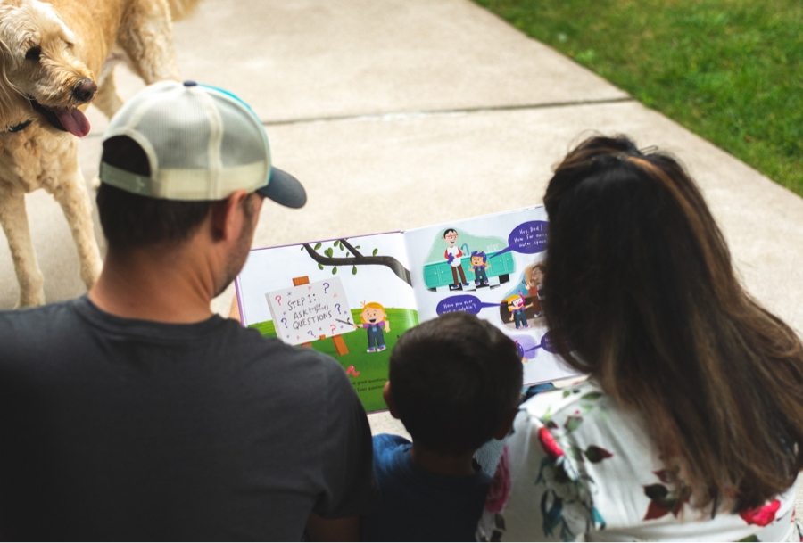

Julia has resided in Oakdale for the last 4.5 years with her husband Carl, son Cameron (3.5), and dog Arie. They chose Oakdale for its excellent schools and strength in community. They have enjoyed exploring the outdoor recreational activities, community events, and supporting the small business owners in the area.
Julia holds a Bachelor of Science degree in Vocational Rehabilitation with a minor in Criminal Justice and Sociology from the University of Wisconsin-Stout and has continued a 12 year career in corrections. Early in her career, as a Juvenile Probation Officer in Ramsey County, she worked within the schools to ensure support for her clients and their families. She then accepted employment with the Minnesota Department of Corrections as an adult Probation/Parole Officer in the South Metro area, before transferring to a Workforce Development Specialist role as a Job Search Trainer. In this role, she provided employment training for incarcerated individuals transitioning back to the community. She assisted them in finding employment in the trades, manufacturing, customer service, and various other careers. As of recent, she is working with individuals on integrity, accountability, respect, restorative work, positive attitude, and work habits.
Throughout her career, she has personally experienced or witnessed what lack of education, money, housing, employment, and resources do to an individual, family, and community. She continues to use her voice to challenge practices in making them more equitable, attainable, and accessible. She has a passion for change, solution-based ideas, and encouraging and empowering youth, parents, educators, and our community to be better together.
As a woman of color, Julia wanted to find a way to use her voice to make a bigger impact for social change. As a mother with a biracial son, it is important that he knows his parents didn't sit back during this time in the world when change is needed the most. Instead, Julia and Carl strived to get involved and wanted to impact change. She will work on her platform over the next four years to bring action and change. This is the passion behind Julia running for District 622 School Board.
